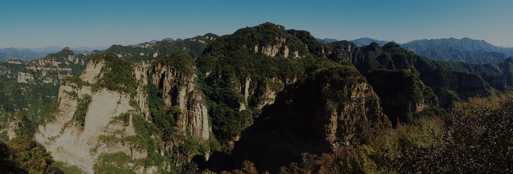

新闻动态
玻璃栈道上的笑声
2016.05.27
白石山玻璃栈道海拔1900米，全长达95米、宽2米，与张家界天门山（长60米、海拔1430米）、的悬空玻璃栈道相比，位列国内玻璃栈道之首。
通道心侗之旅——齐聚通道万佛山侗
寨景区
2016.05.27
5月12日至5月16日，微博网络大V@黑米粒、@纳兰小鱼、@顽童有点儿老H、@喻添旧等齐聚通道，开启了一段“心侗之旅”。
河北省涞源白石山京郊避暑旅游新
选择
2016.05.27
盛夏又至，纳凉避暑的旅游目的地备受青睐。这个夏天，不如就去河北涞源白石山吧，这里不仅有“步步惊心”的玻璃栈道。
更多动态

“南有黄山，北看白石”
—河北涞源白石山风景区
白石山景区位于河北省保定市涞源县，拥有全国唯一的大理岩峰林地貌，山体高大，有“三顶、 六台、九谷、八十一峰”,
主脊线长7,000余米，最高峰海拔2,096米，是世界地质公园、国家森林公园、国家4A级风景名胜区。
查看更多

华北独树一帜的古堡景区
—河北蔚县暖泉古镇
暖泉古镇景区位于河北省张家口市蔚县,始建于明朝嘉靖年间, 是第二批“中国历史文化名镇”
集“古城堡、古寺庙、古戏楼、古民居”四大文化景观于一体,是国家级文物保护单位。
查看更多
正在崛起的国家级风景名胜区
—湖南通道万佛山·侗寨风景区
万佛山·侗寨风景区位于湖南省怀化市通道县,湘、桂、黔三省交界处,素有“南楚极地,北越 襟喉”之称。
万佛山景区为国家级风景名胜区、国家自然遗产，芋头侗寨为全国重点文物保护单位。
查看更多
河北涉县娲皇宫景区
“娲皇宫”为中国神话传说女娲娘娘炼石补天，抟土造人之地。是全国五大祭祖圣地之一，是全国规模最大、
建设时间最早、影响地域最广的奉祀女娲的历史文化遗存，被誉为“华夏祖庙”。
查看更多

东太行风景区
东太行风景区位于河北省邯郸市武安，按照国家5A级景区标准建设游客中心、
停车场、游步道、观光索道及星级酒店等项目。
查看更多

河北承德兴隆山风景区
兴隆山风景区位于河北省承德市兴隆县境内，与京、津、唐、承四市毗邻。景区规划面积约40平方公里，
集皇家密林、秀峰奇石、峡谷漂流、古寺遗存、乡村民俗于一体。
查看更多
股东背景
“中信产业投资基金管理有限公司经国家发展和改革委员会批准于2008年6月设立，得到中信证券等多家股东的支持，资本金投入超过23亿元。公司以“最值得信任的世界级基金管理公司”为战略目标，致力于通过深入的行业研究、准确的投资决策、高效的运营管理、专业的增值服务、持续的并购整合，发现和提升被投企业的价值，为基金投资人创造优异的回报，实现多方共赢。
经过多年的发展，公司逐渐形成了以工业能源、医疗服务、消费休闲、金融服务等核心行业的控股型投资为主，以科技、互联网、医药等新兴行业的少数股权投资为辅，股债结合的投资策略，成功打造了多个具有广泛市场影响和超额回报的投资项目。截至2015年底，中信产业基金累计投资了80多家企业，其中30多家已经在海内外实现上市，旗下六只基金得到了100多家海内外一流投资人的大力支持，以近800亿元人民币的管理资产规模成为中国领先的另类资产管理机构之一。”
注册资本18亿元
资本金23亿元
资产总额800亿元
我们的项目
河北涞源白石山风景区
河北武安东太行风景区
河北承德兴隆山风景区
河北蔚县暖泉古镇
湖南通道万佛山·侗寨风景区
河北邯郸涉县娲皇宫景区
联系我们
中景信旅游投资开发有限公司
China Top View Tourism Investment Development (Group) Co.，Ltd.
北京市朝阳区融科望京中心A座12层
电话：010-57360182
Copyright © 2016 Chinatopcredit Inc. All rights reserved. 中景信旅游投资开发有限公司 京ICP备14018099号-1号